Embodied Human Simulation for Quantitative Design and Analysis of Interactive Robotics
International Conference on Intelligent Robots and Systems (IROS), 2026
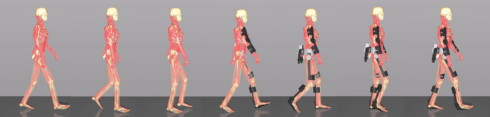
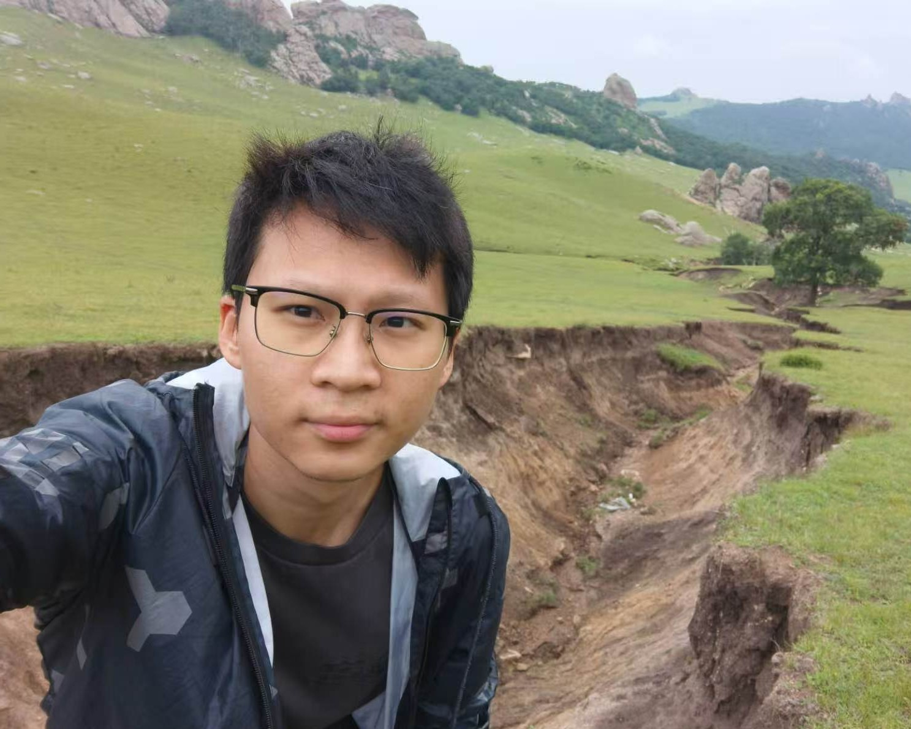
I am a PhD candidate at the School of Aerospace Engineering, Tsinghua University, advised by Prof. Yanan Sui. I received my B.Eng. from the Department of Automation, Tsinghua University. I develop human musculoskeletal models in physical simulation, alongside advanced learning frameworks for the motion control of high-dimensional embodied systems. Operating at the intersection of musculoskeletal simulation, reinforcement learning, and human-centered robotics, my work aims to advance the understanding of human movement and embodied intelligence.
GitHub / Google Scholar / CV / zuoch22@mails.tsinghua.edu.cn
International Conference on Intelligent Robots and Systems (IROS), 2026

International Conference on Learning Representations (ICLR), 2026
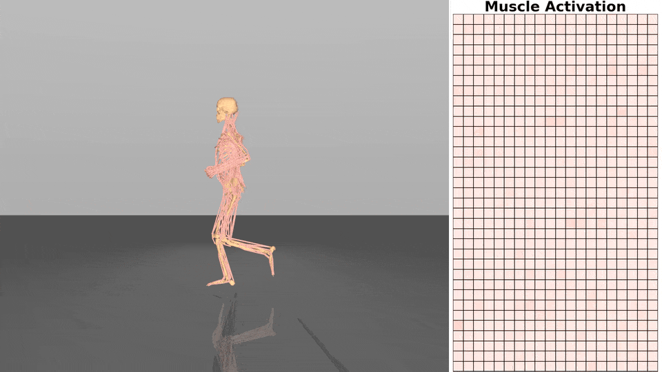
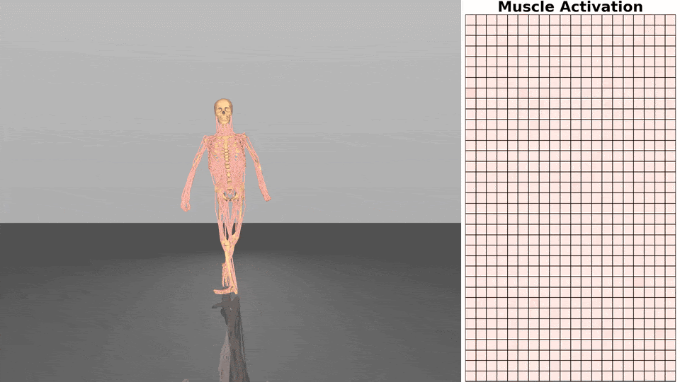
Conference on Neural Information Processing Systems (NeurIPS), Datasets and Benchmarks Track, 2025
Conference on Robot Learning (CoRL), 2025
Science Bulletin 69 (2024)
International Conference on Machine Learning (ICML), 2024


International Conference on Robotics and Automation (ICRA), 2024
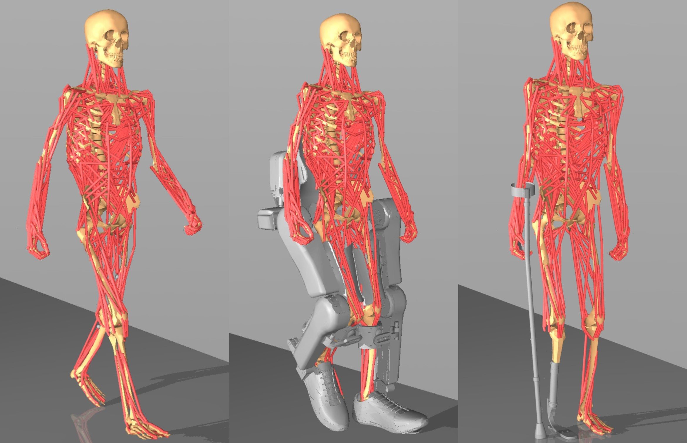

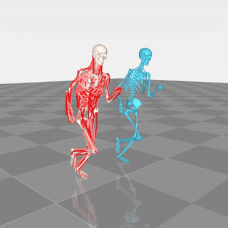
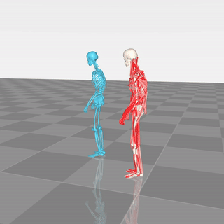
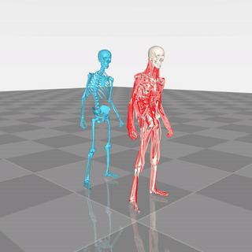
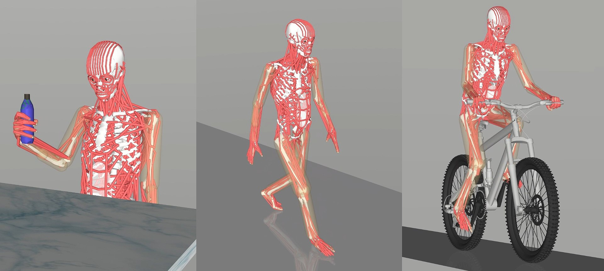
Team ranked 3rd in the Table Tennis track at the NeurIPS 2025 Competition Track.
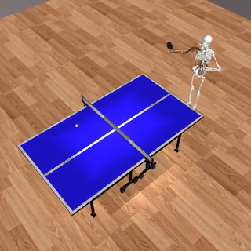
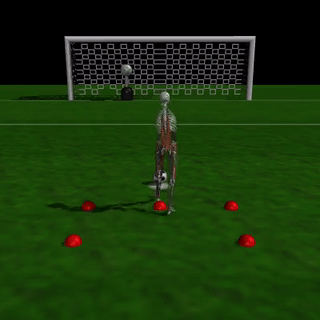
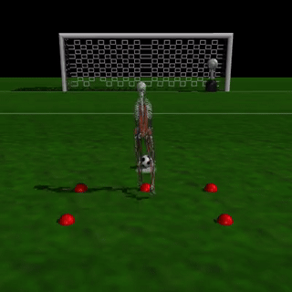
Team received the Best Student Team Award and ranked 2nd in the Manipulation track at the NeurIPS 2024 Competition Track.
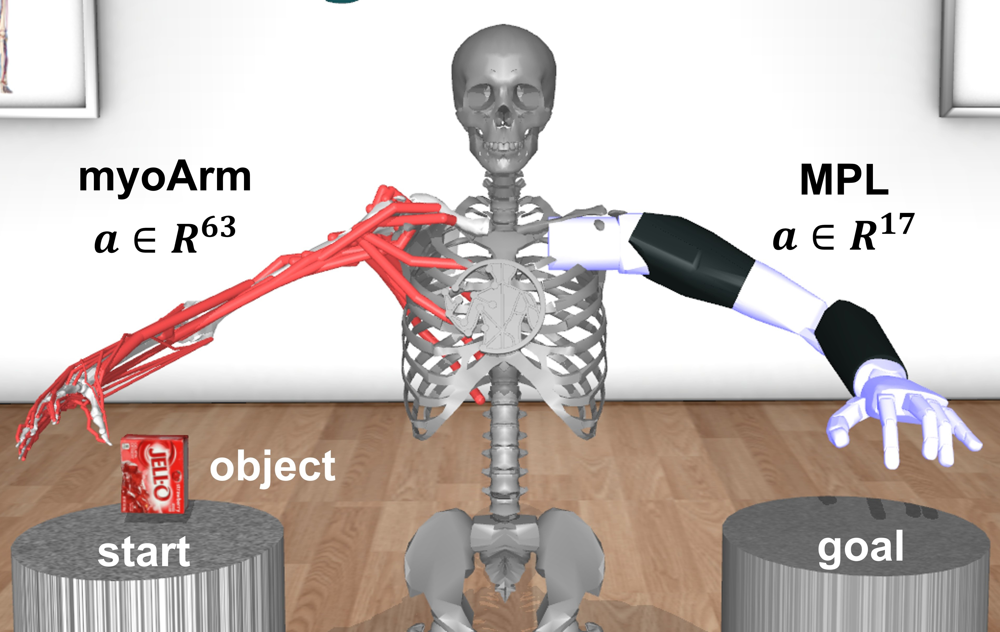
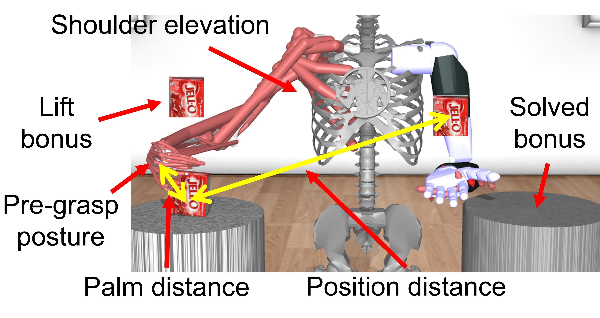